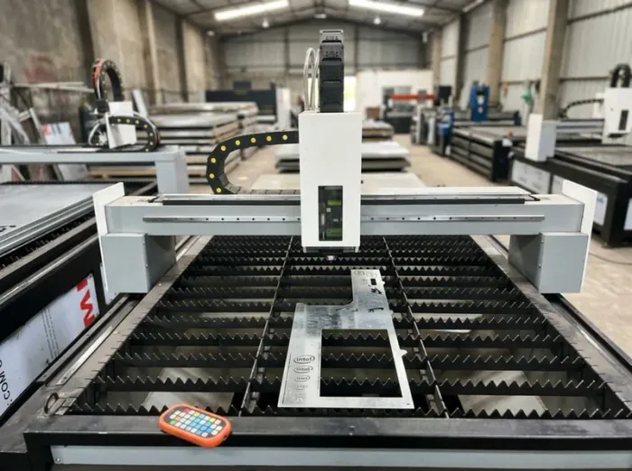
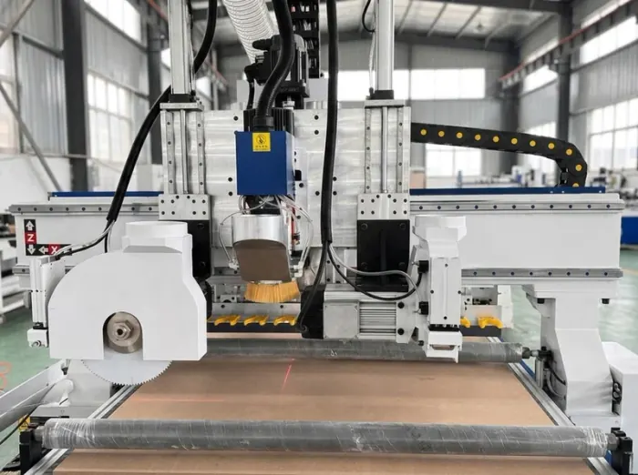
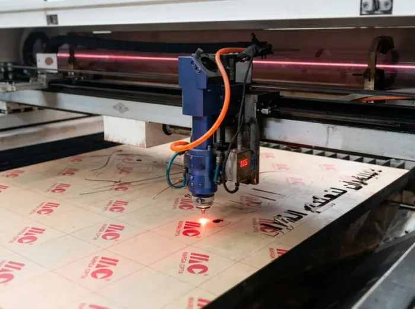
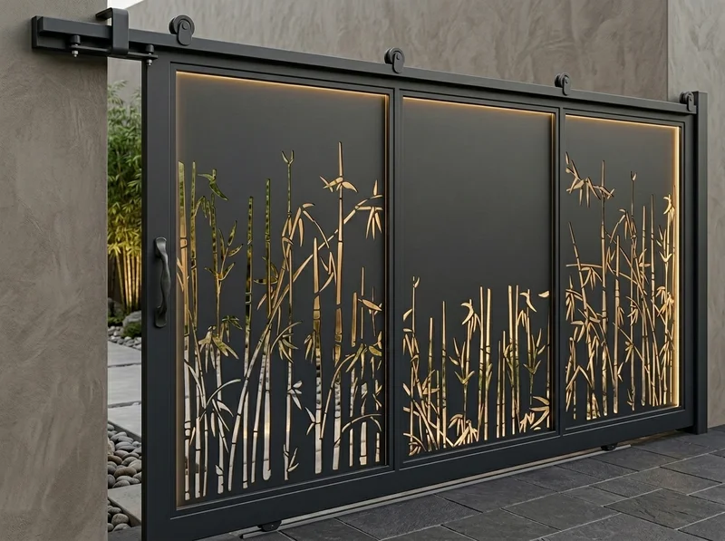
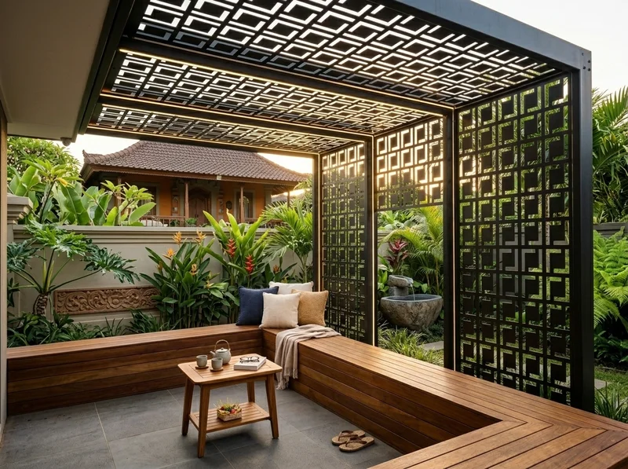
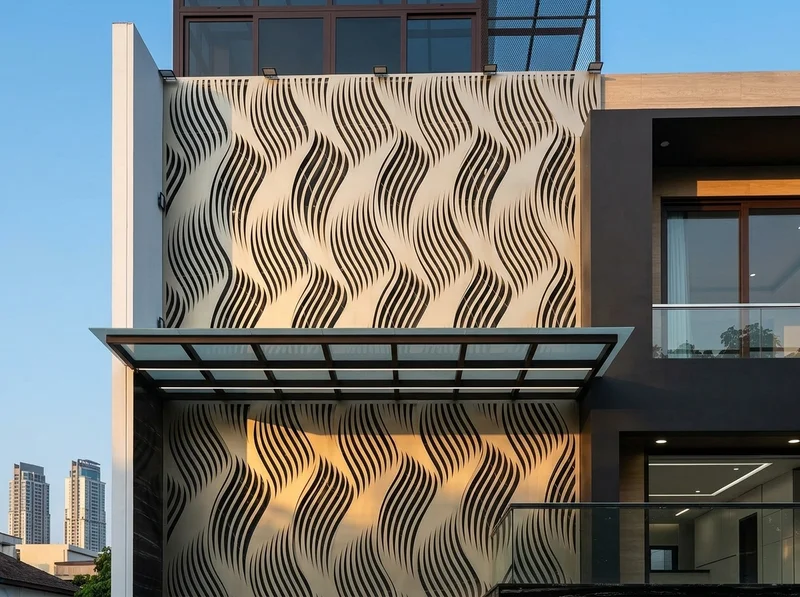
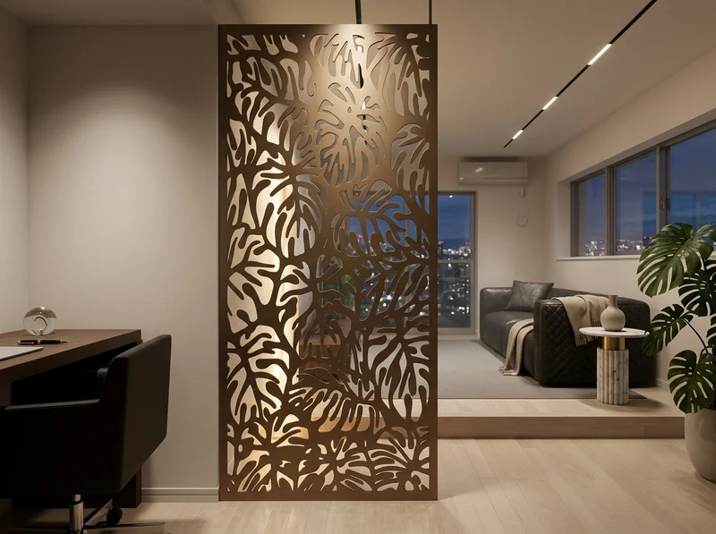
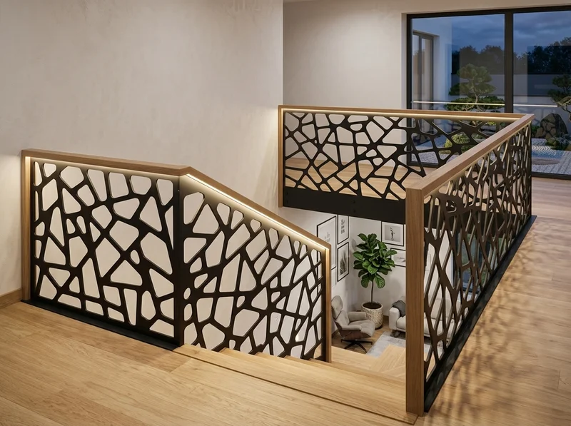
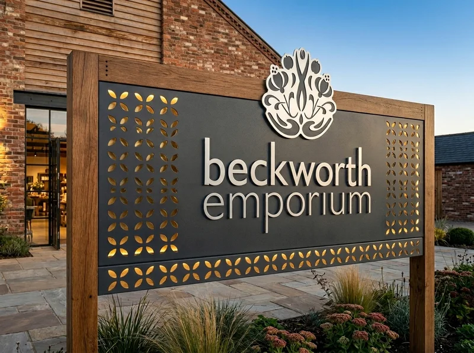

Layanan pemotongan plat besi, stainless, ACP fasad gedung, dan akrilik dengan toleransi presisi 0.1 mm. Dikerjakan langsung di workshop Talang Jambe Palembang dengan pengiriman kargo & travel harian ke Prabumulih Timur & Barat dan sekitarnya.
Banyak kontraktor, arsitek, dan pemilik rumah di Kota Prabumulih mempercayakan laser cutting kepada kami karena kapasitas mesin industri yang lengkap di workshop Palembang. Anda tidak perlu repot keluar kota.
Akses kilat via Jalan Tol Indraprabu. Pengiriman barang setiap hari menggunakan pickup kargo atau travel reguler antar-kota rute Palembang - Prabumulih.
Seluruh lembaran plat besi, panel ACP, dan akrilik diproteksi foam sheet, bubble wrap, dan peti kayu pengaman agar sudut tidak penyok selama perjalanan.
Prabumulih Timur, Prabumulih Barat, Prabumulih Utara, Prabumulih Selatan, Cambai, Rambang Kapak Tengah
Pagar & kanopi rumah modern perumahan BUMN/Migas, fasad panel ACP ruko pertokoan Jalan Sudirman, huruf timbul LED akrilik toko, dan railing tangga.
Setiap mesin dirancang khusus menangani kategori bahan tertentu demi menjaga kepresisian dan efisiensi biaya.

01Sinar serat optik berdaya tinggi untuk memotong plat besi, galvanis, stainless steel, dan aluminium dengan toleransi 0.1 mm tanpa gerinda kasar (burr-free).

02Spindle putaran tinggi untuk memotong lembaran panel utuh ukuran standar 122 x 244 cm untuk fasad ruko, partisi interior cafe, dan dekorasi musala.

03Tabung sinar laser CO2 yang menghasilkan potongan akrilik dengan tepi halus dan bening mengkilap (flame-polished) untuk huruf timbul, signage, dan plakat.
Berlaku untuk pemesanan jasa potong dengan desain standar. Anda bisa membawa material sendiri atau memesan paket komplit.
Cocok untuk huruf timbul LED, plakat, nomor kamar, dan ornamen display transparan.
Berbagai motif pilihan: Songket Palembang, Geometris Modern, Sarang Lebah (Hexagon), Kaligrafi Islami, dan Floral.






Kirim file format .DXF, .DWG, .CDR, atau cukup foto sketsa coretan ukuran Anda via WhatsApp.
Tim teknis kami menghitungkan estimasi tarif potong, efisiensi bahan (nesting), dan memberikan simulasi desain 3D gratis.
Proses pemotongan dikerjakan dengan mesin fiber laser, CNC, atau CO2 dengan toleransi akurasi hingga 0.1 mm.
Pesanan dipacking standar kargo aman, lalu dikirim via ekspedisi pickup atau travel harian menuju alamat Anda di Prabumulih.
Kami telah memiliki jaringan ekspedisi truk kargo dan travel reguler harian yang melayani rute Palembang menuju Prabumulih (1 - 1,5 Jam via Tol Indralaya - Prabumulih). Barang dipacking kayu rapi sehingga tidak tergores atau tertekuk selama perjalanan.
Bisa. Anda cukup membayar jasa potong saja (cutting only) berdasarkan satuan per m² (plat logam), per keping (ACP/kayu), atau per menit (akrilik). Namun jika Anda ingin lebih praktis tanpa repot membawa bahan, kami menyediakan stok plat besi, stainless, ACP, dan akrilik lengkap di workshop.
Tidak masalah. Anda cukup mengirimkan foto contoh motif yang Anda sukai beserta ukuran lebar dan tinggi pagar/kanopi yang diinginkan. Tim desainer kami siap membuatkan gambar kerja dan simulasi 3D gratis sebelum proses potong dimulai.
Ya, dengan 3 mesin industri berkapasitas besar dan pengalaman Sriwijaya Grafika sejak 2008 yang terbiasa menangani klien korporat (Kejati Sumsel, Pemkot Palembang, Pertamina), kami siap melayani pesanan proyek volume besar dengan penawaran harga diskon khusus.
Konsultasikan kebutuhan plat besi, fasad ACP, atau akrilik Anda sekarang. Tim teknis Laserindo Palembang siap membantu dari gambar desain hingga pengiriman ke lokasi Anda di Prabumulih.
Hubungi WhatsApp: 0852-1511-1125